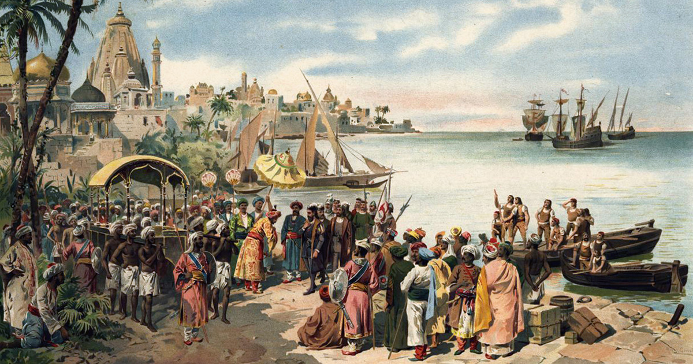

Vasco de Gama est un personnage légendaire qui à beaucoup inspiré les auteurs potugais. En effet, en 1572, Luis de Camoes publie un poème épique Les Lusiades, qui remanie l'épopée de Vasco de Gama pour en faire un mythe. En 1934, c'est le poète portugais Fernando Pessoa qui lui consacre un poème du nom de Mensagem.
Dans Les Tueurs de temps de Gérard Klein en 1965, le vaisseau du capitaine Varun Shangrin est nommé Le Vasco de Gama. En 1994, Vasco de Gama fut représenté sur les billets de banque portugais de 5 000 escudos.
 ⇫